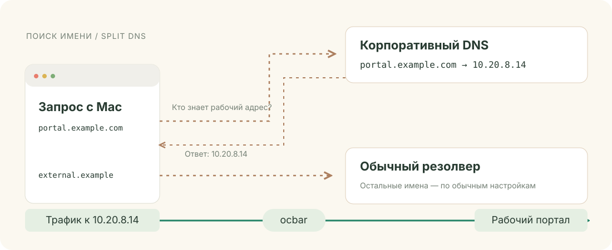
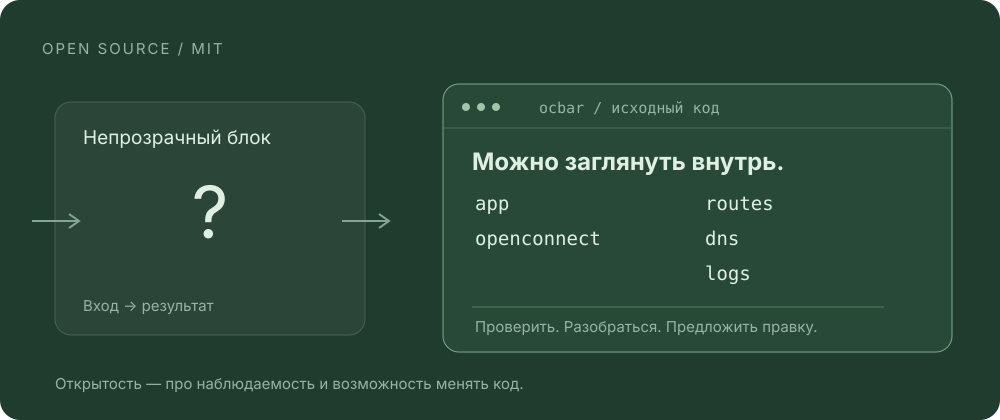

У каждого запроса
свой путь.
Рабочий портал — через ocbar.
Видео — через личный VPN.
Домашние файлы — по LAN.

Три дороги.
сеть 10.20.0.0/16↓
macOS выбирает маршрут по адресу назначения.
ocbar направляет выбранные сети и адреса в свой туннель. Другой VPN настраивается отдельно. Пример предполагает отсутствие конфликтов маршрутов и DNS.
Схема целиком ↗Туннель для работы.
Остальному — свой маршрут.
Только выбранные сети через ocbar
В рабочий туннель уходят адреса из выбранных сетей. Путь к остальным адресам определяют другие маршруты на Mac.
* Доступ к LAN зависит от маршрутов и политики шлюза в обоих режимах. Здесь сравнивается настройка маршрутизации, а не марки клиентов.
Сначала — адрес.
Потом — дорога.
Split DNS отвечает на вопрос «где?».
Маршрутизация — «как добраться?».

Знакомый Mac.
Настоящий ocbar.
Сессия, сети и DNS — рядом.
Профили — в привычном окне настроек.


Реальные окна приложения с демонстрационными данными. Нажмите, чтобы рассмотреть.
Не чёрный ящик.
Открытый код.
Журналы помогают понять соединение.
Исходники — понять сам клиент.

Проверить. Разобраться.
Предложить правку.
Рабочий VPN.
На своём месте.
Начать с установки ↗Нужен ваш совместимый VPN-шлюз.
ocbar управляет одной собственной сессией.